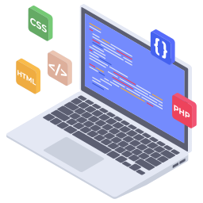

I am Software Tester that searches for new adventures... if You visited this website it means You are curious about me! Below You will find a reason of why i learnt my skills aswell as other informations about my
Learning about ArcMap during my university years has been always my favourite part of the week. I decided to focus more on how we can interpret data and visualise it using ArcMap toolbox, thats why i decided to use the knowledge about ArcMap in my bachleor work. Later on in my first job i got to know about newer product of Esri which is ArcGIS Pro. The endless possibilities of manipulating data has inspired me to deepen my knowledge about ArcGIS and its arcpy library.

My journey with frontend tools started out of my curiosity, I have been always wondering how websites are created. NOW I KNOW! Yet there is still huge journey in front of me and my curiosity is not focused only on frontend... now my other question is HOW THE BACKEND EXACTLY WORKS?! The best thing i love about myself is that i know that its just a matter of time and i will get answer for my question!
Query language was something that I stumbled on while exploring about backend, i instantly felt in love with SQL - for its simplicity and usefullness. Structured database management is so satisfying and at the same time challenging - which is perfect match for me!
I have attended to basic python course at that time i realized how useful it can be with data manipulation and automation it works perfectly with ArcGIS Pro due to arcpy library. It allowed me to create simple code to automate map printouts of chosen properties.

I got to know about testing importance because of my friend, she inspired me to learn more about it. At the beggining understanding ISTQB syllabus was hard, but after expanding my knowledge about testing i can admit that everything in syllabus has its own meaning and great sense. In testing i put emphasis on communication, documentation, constant learning and analythical thinking.
At certain point of my life i started to appreciate nature and so now i'm grateful everyday when i hear birds singging and sun shining, my dream is to live simple life with a garden and my own vegetables on the outskirts of the city. My university taught me a lot about relationship between components of the nature and so now im able to see all the integrity which is beautiful.
My journey with spanish is strongly connected to games, having friends talking in spanish around You can be frustrating... and if i can't understand something - i will sure find a way to solve my problem! I'm mostly learning argentinian accent of spanish - go and see the difference between argentinian and spanish one!
Math has always been my favourite subject. When i had to make a choice of major at university there were two options playing in my brain: Math or Environment management? Do i regret? No. Yet there is a part of my heart waiting to be filled with my "eureka" moments while learning math and I am certain I will find my time to be fullfilled.
I have always been competetive gamer and my will of improvement has never faded away. I'm in love with MMO RPGs, shooters or any coop games at which i can have fun with my friends. Have You ever heared about World of Warcraft, Aion or Valorant? Well... You might find me there!
I lived with the wrong mindset "if You want to be an artist, You have to be blessed with talent"... well... NO! To be able to draw You just have to put a lot of hard work and once i understood it I started to progress. I treat drawing as learning hobby and so i do it in my own pace... im still at the beggining of my journey, maybe You want to join?